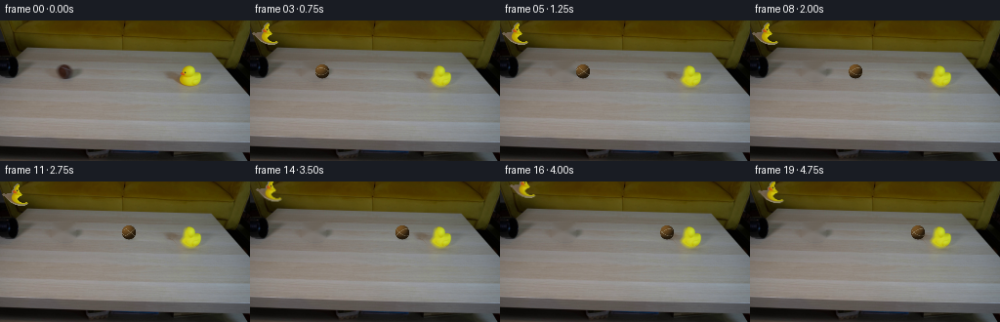
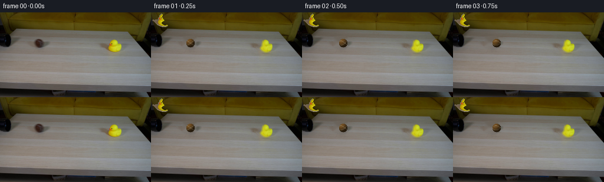
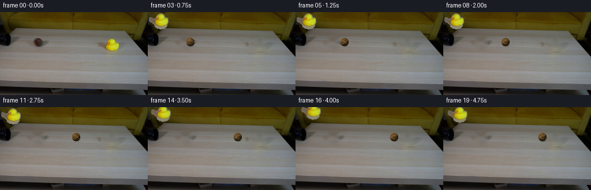
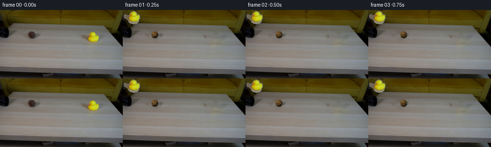

← 本轮 smoke 总览traex/DeepSeek-V4.1-Flash · 0008
text · 256×144 · 4.0 FPS · 20 帧 · 状态 complete · 输出 tokens 50342
原始任务Static locked-off single-shot with fixed frame throughout filmed with constant framerate in real-time. The scene shows a realistic scientific demonstration. The scene only contains the described setup and actions. A light beige coffee table with a small yellow rubber duck on it. A mustard yellow couch is in the background. There is a black pipe that points from the left side to the right side of the table. The brown tennis ball rolls straight out of the black pipe and hits the rubber duck.
当前保存结果
已保存候选与代码修改
这里按时间展示外部捕获的候选，每份均可单独播放。保存新版本不等于完成视觉检查；下方工具证据记录实际看过的图。
候选 01 · 2026-11-08T18:21:48.683976+00:00 · 点开播放与检查图
inspection.png

transition_check.png

代码变化
--- 上一保存版本
+++ 本次保存版本
@@ -0,0 +1,251 @@
+"""Generate the pipe-and-duck demonstration as a local RGB animation."""
+
+from pathlib import Path
+
+import cv2
+import numpy as np
+from PIL import Image
+from scipy import ndimage
+
+import artifact_io
+
+
+CASE_DIR = Path(__file__).resolve().parent
+WIDTH, HEIGHT, FRAME_COUNT = 256, 144, 20
+
+
+def make_masks(source):
+ """Locate the two movers without relying on an external vision model."""
+ hsv = cv2.cvtColor(source, cv2.COLOR_RGB2HSV)
+ r, g, b = source[:, :, 0], source[:, :, 1], source[:, :, 2]
+
+ # The rubber duck is the only strongly yellow/orange object in the scene.
+ duck = (
+ (r > g + 10)
+ & (g > b + 14)
+ & (r > 105)
+ & (hsv[:, :, 1] > 70)
+ )
+ duck[:40] = False
+ duck[73:] = False
+ duck[:, :174] = False
+ duck[:, 214:] = False
+ duck = ndimage.binary_closing(duck, iterations=1)
+ duck = ndimage.binary_fill_holes(duck)
+ duck = ndimage.binary_dilation(duck, iterations=1)
+ duck = ndimage.binary_fill_holes(duck)
+
+ # The ball's dark ochre body and dark shading are distinct from the pipe.
+ ball = np.zeros((HEIGHT, WIDTH), dtype=bool)
+ ball[43:61, 54:77] = (
+ (r[43:61, 54:77] < 118)
+ & (r[43:61, 54:77] >= g[43:61, 54:77] - 3)
+ & (g[43:61, 54:77] >= b[43:61, 54:77] - 2)
+ )
+ ball = ndimage.binary_closing(ball, iterations=1)
+ ball = ndimage.binary_fill_holes(ball)
+ ball = ndimage.binary_dilation(ball, iterations=1)
+
+ return duck, ball
+
+
+def make_plate(source, masks):
+ """Inpaint the movers to recover a usable static background plate."""
+ combined = np.zeros((HEIGHT, WIDTH), dtype=np.uint8)
+ for mask in masks:
+ combined[mask] = 255
+ plate = cv2.inpaint(source, combined, 4, cv2.INPAINT_TELEA)
+
+ # Keep the known plate exact everywhere outside the mover footprints.
+ keep = ~ndimage.binary_dilation(combined > 0, iterations=1)
+ plate[keep] = source[keep]
+ return plate
+
+
+def extract_duck(source, mask):
+ """Return a transparent duck sprite and its original placement."""
+ ys, xs = np.nonzero(mask)
+ x0, x1 = int(xs.min()) - 2, int(xs.max()) + 3
+ y0, y1 = int(ys.min()) - 2, int(ys.max()) + 3
+ crop = source[y0:y1, x0:x1].copy()
+ alpha = mask[y0:y1, x0:x1].astype(np.float32)
+
+ # A one-pixel feather avoids a cut-out edge while preserving the silhouette.
+ alpha = cv2.GaussianBlur(alpha, (0, 0), 0.55)
+ alpha = np.clip((alpha - 0.18) / 0.64, 0.0, 1.0)
+ rgba = np.dstack([crop, np.round(alpha * 255).astype(np.uint8)])
+ return rgba, (x0, y0)
+
+
+def soft_ellipse(canvas, center, radii, strength, color=(23, 19, 15)):
+ """Composite a soft analytic contact shadow onto an RGB canvas."""
+ cx, cy = center
+ rx, ry = radii
+ yy, xx = np.mgrid[0:HEIGHT, 0:WIDTH]
+ distance = ((xx - cx) / rx) ** 2 + ((yy - cy) / ry) ** 2
+ alpha = strength * np.exp(-2.5 * distance) * (distance < 4.0)
+ alpha = alpha[:, :, None]
+ shade = np.asarray(color, dtype=np.float32)
+ out = canvas.astype(np.float32) * (1.0 - alpha) + shade * alpha
+ return np.clip(out, 0, 255).astype(np.uint8)
+
+
+def ball_image(center, radius, roll):
+ """Render a small felt tennis ball with a rotating, curved seam."""
+ cx, cy = center
+ pad = int(np.ceil(radius + 2))
+ x0, x1 = max(0, int(cx) - pad), min(WIDTH, int(cx) + pad + 1)
+ y0, y1 = max(0, int(cy) - pad), min(HEIGHT, int(cy) + pad + 1)
+ yy, xx = np.mgrid[y0:y1, x0:x1]
+
+ nx = (xx + 0.5 - cx) / radius
+ ny = (yy + 0.5 - cy) / radius
+ rr = nx * nx + ny * ny
+ inside = rr <= 1.0
+ nz = np.sqrt(np.clip(1.0 - rr, 0.0, 1.0))
+
+ # Rotate the surface texture around the horizontal rolling axis.
+ cos_a, sin_a = np.cos(roll), np.sin(roll)
+ tx = nx * cos_a - nz * sin_a
+ ty = ny
+ tz = nx * sin_a + nz * cos_a
+ longitude = np.arctan2(tx, tz)
+ latitude = np.arcsin(np.clip(ty, -1.0, 1.0))
+
+ light = np.asarray([-0.48, -0.67, 0.57], dtype=np.float32)
+ light /= np.linalg.norm(light)
+ diffuse = np.clip(nx * light[0] + ny * light[1] + nz * light[2], 0.0, 1.0)
+ rim = np.clip(nz, 0.0, 1.0) ** 0.45
+ shading = 0.23 + 0.66 * diffuse + 0.13 * rim
+
+ # Dark ochre felt, with restrained warm highlights.
+ base = np.stack(
+ [
+ 112.0 * shading + 7.0 * diffuse,
+ 80.0 * shading + 3.0 * diffuse,
+ 38.0 * shading,
+ ],
+ axis=-1,
+ )
+
+ # Two offset, gently curved tennis seams in texture space.
+ seam_curve = 0.53 * np.sin(1.35 * longitude + 0.35)
+ seam_a = np.abs(latitude - seam_curve)
+ seam_b = np.abs(latitude + seam_curve)
+ seam = np.minimum(seam_a, seam_b)
+ seam_strength = np.clip((0.085 - seam) / 0.075, 0.0, 1.0)
+ seam_strength *= (0.55 + 0.45 * diffuse)
+ seam_color = np.asarray([160.0, 151.0, 124.0], dtype=np.float32)
+ base = base * (1.0 - 0.72 * seam_strength[:, :, None])
+ base += seam_color * (0.72 * seam_strength[:, :, None])
+
+ # Fine deterministic felt grain keeps the ball from looking like plastic.
+ grain = (
+ np.sin(xx * 2.31 + yy * 1.77 + roll * 17.0)
+ + np.sin(xx * 5.13 - yy * 3.19 + roll * 9.0)
+ ) * 1.15
+ base += grain[:, :, None] * np.asarray([1.0, 0.82, 0.48])
+
+ # Anti-aliased circumference.
+ edge = np.clip((1.02 - np.sqrt(rr)) / 0.075, 0.0, 1.0)
+ alpha = (inside * edge)[:, :, None]
+ base = np.clip(base, 0, 255) * alpha
+ return (x0, y0), base.astype(np.float32), alpha
+
+
+def composite_ball(canvas, center, radius, roll):
+ x0, y0 = int(center[0]) - int(np.ceil(radius + 2)), int(center[1]) - int(np.ceil(radius + 2))
+ (bx0, by0), color, alpha = ball_image(center, radius, roll)
+ y1, x1 = by0 + color.shape[0], bx0 + color.shape[1]
+ roi = canvas[by0:y1, bx0:x1].astype(np.float32)
+ out = roi * (1.0 - alpha) + color
+ canvas[by0:y1, bx0:x1] = np.clip(out, 0, 255).astype(np.uint8)
+
+
+def place_duck(canvas, sprite, origin, dx, dy, angle):
+ """Warp the duck around its base and composite it over the plate."""
+ rgba = Image.fromarray(sprite, mode="RGBA")
+ x0, y0 = origin
+ cx = x0 + rgba.width * 0.50
+ cy = y0 + rgba.height * 0.82
+ matrix = cv2.getRotationMatrix2D((cx, cy), angle, 1.0)
+ matrix[0, 2] += dx
+ matrix[1, 2] += dy
+
+ warped = cv2.warpAffine(
+ np.asarray(rgba),
+ matrix,
+ (WIDTH, HEIGHT),
+ flags=cv2.INTER_LINEAR,
+ borderMode=cv2.BORDER_CONSTANT,
+ borderValue=(0, 0, 0, 0),
+ )
+ alpha = warped[:, :, 3:4].astype(np.float32) / 255.0
+ canvas[:] = (
+ canvas.astype(np.float32) * (1.0 - alpha)
+ + warped[:, :, :3].astype(np.float32) * alpha
+ ).astype(np.uint8)
+
+
+def main():
+ source = np.asarray(Image.open(CASE_DIR / "first_frame.png").convert("RGB"))
+ duck_mask, ball_mask = make_masks(source)
+ plate = make_plate(source, (duck_mask, ball_mask))
+ duck_sprite, duck_origin = extract_duck(source, duck_mask)
+
+ # Ease out of the pipe, then roll at a steady speed into the duck.
+ centers_x = np.asarray(
+ [65.0, 67.0, 70.0, 74.0, 79.0, 85.0, 92.0, 100.0,
+ 108.0, 116.0, 124.0, 132.0, 140.0, 148.0, 156.0,
+ 164.0, 171.0, 175.5, 174.0, 172.0],
+ dtype=np.float32,
+ )
+ centers_y = np.full(FRAME_COUNT, 52.2, dtype=np.float32)
+ duck_dx = np.asarray(
+ [0, 0, 0, 0, 0, 0, 0, 0, 0, 0, 0, 0, 0, 1.0, 2.5, 4.0, 5.2, 5.8, 5.2, 4.8],
+ dtype=np.float32,
+ )
+ duck_dy = np.asarray(
+ [0, 0, 0, 0, 0, 0, 0, 0, 0, 0, 0, 0, 0, -0.2, -0.5, -0.7, -0.7, -0.5, -0.2, 0],
+ dtype=np.float32,
+ )
+ duck_angle = np.asarray(
+ [0, 0, 0, 0, 0, 0, 0, 0, 0, 0, 0, 0, 0, -0.6, -1.4, -2.2, -2.6, -2.4, -1.7, -1.0],
+ dtype=np.float32,
+ )
+
+ frames = []
+ radius = 7.35
+ for index in range(FRAME_COUNT):
+ if index == 0:
+ frames.append(source.copy())
+ continue
+
+ frame = plate.copy()
+
+ # Soft contact shadow follows the ball along the pipe surface.
+ ball_center = (float(centers_x[index]), float(centers_y[index]))
+ frame = soft_ellipse(frame, (ball_center[0] + 1.0, ball_center[1] + 6.4),
+ (7.7, 2.1), 0.21)
+
+ # A second, broader shadow travels with the duck once it is displaced.
+ duck_shadow_x = 195.0 + 0.72 * duck_dx[index]
+ frame = soft_ellipse(frame, (duck_shadow_x, 69.2 + 0.25 * duck_dy[index]),
+ (13.0, 3.1), 0.13)
+
+ place_duck(frame, duck_sprite, duck_origin, duck_dx[index],
+ duck_dy[index], duck_angle[index])
+
+ roll = (centers_x[index] - centers_x[0]) / radius
+ composite_ball(frame, ball_center, radius, float(roll))
+ frames.append(frame)
+
+ frames = np.asarray(frames, dtype=np.uint8)
+ assert frames.shape == (FRAME_COUNT, HEIGHT, WIDTH, 3)
+ assert np.array_equal(frames[0], source)
+ artifact_io.save(frames, CASE_DIR)
+ return frames
+
+
+if __name__ == "__main__":
+ main()
候选 02 · 2026-11-08T18:23:11.397530+00:00 · 点开播放与检查图
inspection.png

transition_check.png

代码变化
--- 上一保存版本
+++ 本次保存版本
@@ -21,10 +21,10 @@
# The rubber duck is the only strongly yellow/orange object in the scene.
duck = (
- (r > g + 10)
- & (g > b + 14)
- & (r > 105)
- & (hsv[:, :, 1] > 70)
+ (hsv[:, :, 0] >= 10)
+ & (hsv[:, :, 0] <= 45)
+ & (hsv[:, :, 1] > 45)
+ & (hsv[:, :, 2] > 45)
)
duck[:40] = False
duck[73:] = False
@@ -164,7 +164,7 @@
def place_duck(canvas, sprite, origin, dx, dy, angle):
"""Warp the duck around its base and composite it over the plate."""
- rgba = Image.fromarray(sprite, mode="RGBA")
+ rgba = Image.fromarray(sprite)
x0, y0 = origin
cx = x0 + rgba.width * 0.50
cy = y0 + rgba.height * 0.82
候选 03 · 2026-11-08T18:23:13.174995+00:00 · 点开播放与检查图
inspection.png

transition_check.png

代码变化
代码未变化；重新保存了产物。
可观测工具行为
命令 1 · 2026-11-08T18:15:59.973981+00:00/bin/bash -c "pwd && rg --files -g 'prompt.txt' -g 'GENERATION_RULES.md' -g 'first_frame.png' -g '"'!*.git*'"'"
exit 0 命令 2 · 2026-11-08T18:16:00.140531+00:00/bin/bash -c 'ls -la'
exit 0 命令 3 · 2026-11-08T18:16:00.527643+00:00/bin/bash -c 'git status --short'
exit 0 命令 4 · 2026-11-08T18:16:08.294535+00:00/bin/bash -c 'cat prompt.txt'
exit 0 命令 5 · 2026-11-08T18:16:08.401685+00:00/bin/bash -c 'cat GENERATION_RULES.md'
exit 0 命令 6 · 2026-11-08T18:16:08.596745+00:00/bin/bash -c 'file first_frame.png && identify first_frame.png 2>/dev/null || true'
exit 0 命令 7 · 2026-11-08T18:16:08.798761+00:00/bin/bash -c "sed -n '1,240p' artifact_io.py"
exit 0 命令 8 · 2026-11-08T18:16:21.098049+00:00/bin/bash -c "python - <<'PY'
from PIL import Image
import numpy as np
im=Image.open('first_frame.png')
a=np.array(im.convert('RGB'))
print(im.size, im.mode, a.shape, a.dtype)
print('range',a.reshape(-1,3).min(0),a.reshape(-1,3).max(0))
print('mean/std',a.mean((0,1)),a.std((0,1)))
# common quantized colors
q=(a//16)*16
c,n=np.unique(q.reshape(-1,3),axis=0,return_counts=True)
for i in np.argsort(n)[-20:][::-1]: print(tuple(c[i]),int(n[i]))
PY"exit 0 命令 9 · 2026-11-08T18:16:27.362899+00:00/bin/bash -c "python - <<'PY'
from PIL import Image
import numpy as np
im=np.array(Image.open('first_frame.png').convert('RGB'))
# grayscale downsample to 128x72, chars
g=(.299*im[:,:,0]+.587*im[:,:,1]+.114*im[:,:,2])
g=g.reshape(72,2,128,2).mean((1,3))
chars=' .:-=+*#%@'
for row in g:
print(''.join(chars[min(9,int(v/256*10))] for v in row))
PY"exit 0 命令 10 · 2026-11-08T18:16:35.439354+00:00/bin/bash -c "python - <<'PY'
import cv2, numpy as np
im=cv2.imread('first_frame.png')
hsv=cv2.cvtColor(im,cv2.COLOR_BGR2HSV)
# yellow high saturation
for name,mask in [
('yellow', ((hsv[:,:,0]>=15)&(hsv[:,:,0]<=40)&(hsv[:,:,1]>80)&(hsv[:,:,2]>80)).astype('uint8')),
('bright_yellow', ((hsv[:,:,0]>=20)&(hsv[:,:,0]<=40)&(hsv[:,:,1]>120)&(hsv[:,:,2]>130)).astype('uint8')),
('brown', ((hsv[:,:,0]>=5)&(hsv[:,:,0]<=20)&(hsv[:,:,1]>70)&(hsv[:,:,2]>30)&(hsv[:,:,2]<180)).astype('uint8')),
('black', ((hsv[:,:,2]<40)).astype('uint8')),
]:
n,lab,stats,cent=cv2.connectedComponentsWithStats(mask,8)
print('\\n',name)
for i in np.argsort(stats[1:,4])[-15:][::-1]+1:
x,y,w,h,area=stats[i]
print(i,'bbox',x,y,w,h,'area',area,'cent',np.round(cent[i],1))
PY"exit 0 命令 11 · 2026-11-08T18:16:40.536974+00:00/bin/bash -c "python - <<'PY'
from PIL import Image
import numpy as np
im=np.array(Image.open('first_frame.png').convert('RGB'))
# exact RGB crop prints in terminal ANSI truecolor half blocks maybe output image cannot visually inspect. Use color classified chars
# map colors to semantic labels manually with thresholds
for y in range(0,144,2):
s=''
for x in range(0,256,2):
p=im[y:y+2,x:x+2].mean((0,1)); r,g,b=p
mx=max(p); mn=min(p)
if mx<30: c='K'
elif mx<60: c='k'
elif r>130 and g>90 and b<70 and r>g+25: c='Y' # yellow
elif r>g*1.25 and g>b*1.4 and r<150: c='B' # brown
elif mx-mn<12 and mx>120: c='W'
elif mx-mn<18: c='g'
elif b>r+8: c='c'
else: c='.'
s+=c
print(s)
PY"exit 0 命令 12 · 2026-11-08T18:16:52.794882+00:00/bin/bash -c "python - <<'PY'
from PIL import Image
import numpy as np
from sklearn.cluster import KMeans
im=np.array(Image.open('first_frame.png').convert('RGB'))
pix=im.reshape(-1,3)
km=KMeans(8, random_state=0, n_init=5).fit(pix[::7])
c=km.cluster_centers_.round().astype(int)
n=np.bincount(km.labels_)
for i in np.argsort(n)[::-1]: print(i, c[i], n[i], n[i]/len(km.labels_))
PY"exit 0 命令 13 · 2026-11-08T18:17:01.843590+00:00/bin/bash -c "python - <<'PY'
import cv2, numpy as np
im=cv2.imread('first_frame.png')
g=cv2.cvtColor(im,cv2.COLOR_BGR2GRAY)
e=cv2.Canny(g,30,80)
lines=cv2.HoughLinesP(e,1,np.pi/180,threshold=15,minLineLength=12,maxLineGap=4)
out=[]
for l in lines[:,0]:
x1,y1,x2,y2=map(int,l); L=((x2-x1)**2+(y2-y1)**2)**.5; ang=np.degrees(np.arctan2(y2-y1,x2-x1))
out.append((L,ang,(x1,y1,x2,y2)))
for z in sorted(out,reverse=True)[:60]: print(f'L{z[0]:5.1f} a{z[1]:6.1f} {z[2]}')
PY"exit 0 命令 14 · 2026-11-08T18:17:07.243448+00:00/bin/bash -c "python - <<'PY'
import cv2, numpy as np
im=cv2.imread('first_frame.png')
# ball brown region 59..71 x 45..59. ellipse/duck segmentation colors sampled grid
for name,box in [('ball',(52,42,80,65)),('duck',(175,40,211,72)),('pipe',(70,43,170,65)),('table',(20,90,240,130))]:
x1,y1,x2,y2=box
p=im[y1:y2,x1:x2][:,:,::-1]
print(name, 'mean',p.mean((0,1)).round(1), 'min',p.min((0,1)), 'max',p.max((0,1)))
# quantized colors top 10
q=(p//16)*16;c,n=np.unique(q.reshape(-1,3),axis=0,return_counts=True)
print([(tuple(map(int,c[i])),int(n[i])) for i in np.argsort(n)[-8:][::-1]])
PY"exit 0 命令 15 · 2026-11-08T18:17:12.193312+00:00/bin/bash -c "python - <<'PY'
from PIL import Image
import numpy as np
im=np.array(Image.open('first_frame.png').convert('RGB'))
# semantic map around main objects at 1 char per px / 2x horizontal
# approximate palette print each pixel via letters based on color
for y in range(25,90,2):
s=''
for x in range(45,220,1):
p=im[y,x].astype(int);r,g,b=p
mx=max(p);mn=min(p)
if r>145 and g>140 and b<90: c='Y' # duck
elif r>g*1.25 and g>b*1.3 and r<160 and g<120: c='B' # ball
elif mx<65: c='#'
elif mx-mn<12 and mx>115: c='-'
elif mx-mn<15: c='.'
elif b>r+10: c='c'
else: c=' '
s+=c
print(f'{y:3d} {s}')
PY"exit 0 命令 16 · 2026-11-08T18:17:17.854294+00:00/bin/bash -c "python - <<'PY'
import cv2, numpy as np
im=cv2.imread('first_frame.png')
# orange-ish and gray pixels visual as colored components
hsv=cv2.cvtColor(im,cv2.COLOR_BGR2HSV)
# ball mask brown/orange
m=((hsv[:,:,0]<=18)&(hsv[:,:,1]>40)&(hsv[:,:,2]>30)&(hsv[:,:,2]<170)).astype('uint8')*255
cv2.imwrite('.tmp/ballmask.png',m)
n,l,st,ce=cv2.connectedComponentsWithStats(m)
for i in range(1,n):
x,y,w,h,a=st[i]
if a>10: print(i,(x,y,w,h,a),ce[i])
# print RGB matrices ball crop, downsample to exact 24x20 via sample
for y in range(43,61,2):
print(y, ['%02x%02x%02x'%tuple(im[y,x][::-1]) for x in range(54,78,2)])
PY"exit 0 命令 17 · 2026-11-08T18:17:22.505893+00:00/bin/bash -c "python - <<'PY'
import cv2, numpy as np
im=cv2.imread('first_frame.png')
for y in range(40,72):
# find near-duck bright yellow across x
pix=im[y,:,::-1]
m=(pix[:,0]>135)&(pix[:,1]>125)&(pix[:,2]<95)
xs=np.flatnonzero(m)
if len(xs): print(y, xs.min(), xs.max(),len(xs))
PY"exit 0 命令 18 · 2026-11-08T18:17:27.470833+00:00/bin/bash -c "python - <<'PY'
from PIL import Image
import numpy as np
im=np.array(Image.open('first_frame.png').convert('RGB'))
# table and pipe edge positions by rows
for y in range(42,76):
# mean, edge candidates based abs diff
p=im[y].astype(float)
d=np.linalg.norm(np.diff(p,axis=0),axis=1)
inds=np.flatnonzero(d>12)
# groups
groups=[]
for x in inds:
if not groups or x>groups[-1][-1]+1: groups.append([x])
else: groups[-1].append(x)
big=[(g[0],g[-1],round(d[g].max(),1)) for g in groups if len(g)>=1]
print(y,big[:20])
PY"exit 0 命令 19 · 2026-11-08T18:17:31.863411+00:00/bin/bash -c "python - <<'PY'
from PIL import Image
import numpy as np
im=np.array(Image.open('first_frame.png').convert('RGB'))
# PCA / fit background gradients for pipe region? Print x color samples rows
for y in [42,44,46,48,50,52,54,56,58,60,62,64,66,68,70,72,74]:
print('y',y, [(x,tuple(im[y,x])) for x in [20,35,45,50,55,60,65,70,75,80,100,130,160,180,200,220,240]])
PY"exit 0 命令 20 · 2026-11-08T18:17:45.572439+00:00/bin/bash -c "python - <<'PY'
from PIL import Image
import numpy as np
im=np.array(Image.open('first_frame.png').convert('RGB')).astype(float)
for y in range(0,144,4):
p=im[y:y+4].reshape(-1,3)
print(f'{y:3d}-{y+3:3d}', np.round(p.mean(0),1), np.round(p.std(0),1))
PY"exit 0 命令 21 · 2026-11-08T18:17:52.771208+00:00/bin/bash -c "command -v chafa || true; command -v viu || true; command -v jp2 || true; command -v img2txt || true; command -v ffmpeg || true; python - <<'PY'
import importlib.util
for m in ['numpy','PIL','cv2','scipy','skimage','torch','imageio','moviepy']:
print(m, bool(importlib.util.find_spec(m)))
PY"
exit 0 命令 22 · 2026-11-08T18:17:58.035119+00:00/bin/bash -c "python - <<'PY'
from PIL import Image
import numpy as np
im=np.array(Image.open('first_frame.png').convert('RGB')).astype(float)
# find noise/detail residual from median blur
import cv2
b=cv2.medianBlur(im.astype('uint8'),7).astype(float)
r=np.abs(im-b).mean(2)
for box in [(0,0,256,30),(20,100,240,125),(0,125,256,144),(90,40,170,65),(185,46,206,68)]:
x1,y1,x2,y2=box; print(box, 'mean',im[y1:y2,x1:x2].mean((0,1)).round(1),'resid',r[y1:y2,x1:x2].mean().round(2))
# row detail median
print('row residual',[(y,round(r[y].mean(),1)) for y in range(0,144,4)])
PY"exit 0 命令 23 · 2026-11-08T18:18:06.229464+00:00/bin/bash -c "python - <<'PY'
import cv2, numpy as np
im=cv2.imread('first_frame.png')
g=cv2.cvtColor(im,cv2.COLOR_BGR2GRAY).astype(float)
# high-pass low contrast via large median
bg=cv2.medianBlur(g.astype('uint8'),31).astype(float)
r=g-bg
for t in [-10,-15,-20,-25]:
m=(r<t).astype('uint8')
n,lab,st,ce=cv2.connectedComponentsWithStats(m,8)
print('\\nthreshold',t)
for i in np.argsort(st[1:,4])[-20:][::-1]+1:
x,y,w,h,a=st[i]
print((x,y,w,h,a),tuple(np.round(ce[i],1)))
PY"exit 0 命令 24 · 2026-11-08T18:18:10.974838+00:00/bin/bash -c "python - <<'PY'
from PIL import Image
import numpy as np
im=np.array(Image.open('first_frame.png').convert('RGB'))
# show 1 pixel detail color map around ball: categorize dark/brown/light and print coordinates values
for y in range(43,61):
s=''
for x in range(52,80):
r,g,b=map(int,im[y,x]); lum=(r+g+b)/3
if r>g+10 and g>b+3 and r<100: c='B'
elif lum<55:c='#'
elif lum<90:c='k'
elif lum<115:c='.'
else:c=' '
s+=c
print(f'{y:2d} {s}')
PY"exit 0 命令 25 · 2026-11-08T18:18:16.548481+00:00/bin/bash -c "python - <<'PY'
import cv2, numpy as np
im=cv2.imread('first_frame.png')
# print circle fit estimated ball mask via dark/brown threshold and contours
mask=np.zeros(im.shape[:2],np.uint8)
hsv=cv2.cvtColor(im,cv2.COLOR_BGR2HSV)
for y in range(44,60):
for x in range(55,74):
r,g,b=im[y,x,::-1]
if (r<115 and r>g+3 and g>b+1) or (max(r,g,b)<80): mask[y,x]=255
# contour fit ellipse
cnts,_=cv2.findContours(mask,cv2.RETR_EXTERNAL,cv2.CHAIN_APPROX_NONE)
for c in sorted(cnts,key=cv2.contourArea,reverse=True)[:5]:
a=cv2.contourArea(c)
if a<5:continue
print(a, cv2.boundingRect(c),cv2.fitEllipse(c))
PY"exit 0 命令 26 · 2026-11-08T18:18:21.367686+00:00/bin/bash -c "python - <<'PY'
from PIL import Image
import numpy as np
im=np.array(Image.open('first_frame.png').convert('RGB'))
# box blur color rows table/pipe to see boundaries
for y in [43,45,47,49,51,53,55,57,59,61,63,65,67,69,71,73,75,77,79,81,83,85,87,89,91,93,95,97,99,101,103,105,107,109,111,113,115,117,119,121,123,125,127,129,131,133,135,137,139,141,143]:
p=im[y].reshape(8,32,3).mean(1).round().astype(int)
print(f'{y:3d}', ' '.join('%02x%02x%02x'%tuple(v) for v in p))
PY"exit 0 命令 27 · 2026-11-08T18:18:36.405072+00:00/bin/bash -c "python - <<'PY'
from PIL import Image
import numpy as np
im=np.array(Image.open('first_frame.png').convert('RGB'))
for y in range(40,73):
s=''
for x in range(174,216):
r,g,b=map(int,im[y,x]);
# yellow/duck
if r>145 and g>135 and b<100: c='Y'
elif r>g+20 and g>b+8 and r<160: c='o' # orange beak/brown
elif max(r,g,b)<65:c='#'
elif max(r,g,b)<95:c='k'
elif r+g>300 and abs(r-g)<15 and b<120:c='y'
elif abs(r-g)<15 and abs(g-b)<15 and r>125:c='-'
elif abs(r-g)<15 and abs(g-b)<15 and r>100:c='.'
else:c=' '
s+=c
print(f'{y:2d} {s}')
PY"exit 0 命令 28 · 2026-11-08T18:18:41.070978+00:00/bin/bash -c "python - <<'PY'
from PIL import Image
import numpy as np
im=np.array(Image.open('first_frame.png').convert('RGB'))
# For duck mask, print every row coordinates classified yellow/orange; ranges
for y in range(45,68):
p=im[y]
yellow=(p[:,0]>140)&(p[:,1]>125)&(p[:,2]<105)
orange=(p[:,0]>100)&(p[:,0]>p[:,1]+20)&(p[:,1]>p[:,2]+8)&(p[:,2]<80)
xs=np.flatnonzero(yellow|orange)
# groups
groups=[]
for x in xs:
if not groups or x>groups[-1][-1]+1:groups.append([x])
else:groups[-1].append(x)
print(y, [(g[0],g[-1],len(g)) for g in groups])
PY"exit 0 命令 29 · 2026-11-08T18:18:45.307867+00:00/bin/bash -c "python - <<'PY'
from PIL import Image
import numpy as np
im=np.array(Image.open('first_frame.png').convert('RGB'))
# dump raw rgb matrix around duck at 1 px block chars based hue/value
for y in range(43,71):
s=''
for x in range(176,214):
r,g,b=map(int,im[y,x]);
if r>145 and g>130 and b<105:c='Y'
elif r>120 and g>105 and b<80:c='y'
elif r>85 and r>g+18 and g>b+8:c='o'
elif max(r,g,b)<60:c='#'
elif max(r,g,b)<90:c='k'
elif max(r,g,b)<120:c='d'
elif max(r,g,b)<145:c='-'
elif max(r,g,b)<165:c='.'
else:c=' '
s+=c
print(f'{y:2d} {s}')
PY"exit -1 命令 30 · 2026-11-08T18:19:12.459699+00:00/bin/bash -c "python - <<'PY'
from PIL import Image
import numpy as np
im=np.array(Image.open('first_frame.png').convert('RGB'))
for y in range(28,74):
s=''
for x in range(0,80):
r,g,b=map(int,im[y,x]); mx=max(r,g,b)
if mx<35:c='#'
elif mx<60:c='k'
elif mx<85:c='d'
elif mx<110:c='-'
elif mx<130:c='.'
elif mx<150:c=' '
else:c='+'
s+=c
print(f'{y:2d} {s}')
PY"exit 0 命令 31 · 2026-11-08T18:19:22.371495+00:00/bin/bash -c "python - <<'PY'
from PIL import Image
import numpy as np
im=np.array(Image.open('first_frame.png').convert('RGB'))
for y in range(28,75):
s=''
for x in range(0,100):
r,g,b=map(int,im[y,x]); mx=max(r,g,b)
if r>g+10 and g>b+5 and r<120 and mx<100:c='B'
elif mx<25:c='#'
elif mx<45:c='K'
elif mx<65:c='k'
elif mx<85:c='d'
elif mx<105:c='-'
elif mx<125:c='.'
elif mx<145:c=' '
elif mx<165:c='+'
else:c='@'
s+=c
print(f'{y:2d} {s}')
PY"exit 0 命令 32 · 2026-11-08T18:19:27.268205+00:00/bin/bash -c "python - <<'PY'
import numpy as np, cv2
from PIL import Image
im=np.array(Image.open('first_frame.png').convert('RGB'))
# Try detect ball center/radius based color covariance around crop, fit ellipse using dark region excluding background
# print an enlarged crop as rgb matrix compressed using nearest custom
for y in range(44,60):
s=''
for x in range(55,75):
r,g,b=map(int,im[y,x]);
if max(r,g,b)<50:c='X'
elif max(r,g,b)<75:c='x'
elif r>g+5 and g>b+3:c='o'
elif max(r,g,b)<100:c='d'
elif max(r,g,b)<120:c='.'
else:c=' '
s+=c
print(s)
PY"exit 0 命令 33 · 2026-11-08T18:19:31.756172+00:00/bin/bash -c "python - <<'PY'
from PIL import Image
import numpy as np
im=np.array(Image.open('first_frame.png').convert('RGB'))
# find ball visually by local brightness within 50:80 40:65 using segmentation dark compared nearby
for y in range(42,62):
vals=[]
for x in range(52,80):
r,g,b=map(int,im[y,x]); vals.append(max(r,g,b))
# print relative chars after min-max
lo,hi=min(vals),max(vals)
print(f'{y:2d}', ''.join(' .:-=+*#%@'[min(9,int((v-lo)/(hi-lo+1e-9)*10))] for v in vals),lo,hi)
PY"exit 0 命令 34 · 2026-11-08T18:19:35.665311+00:00/bin/bash -c "python - <<'PY'
from PIL import Image
import numpy as np
im=np.array(Image.open('first_frame.png').convert('RGB'))
for x in range(60,72):
print('x',x,[(y,tuple(im[y,x])) for y in range(43,62)])
PY"exit 0 命令 35 · 2026-11-08T18:19:40.236736+00:00/bin/bash -c "python - <<'PY'
import cv2,numpy as np
im=cv2.imread('first_frame.png')
# hough circles on gray crop? whole
for p2 in [5,7,9,11,13,15]:
c=cv2.HoughCircles(cv2.cvtColor(im,cv2.COLOR_BGR2GRAY),cv2.HOUGH_GRADIENT,dp=1,minDist=10,param1=50,param2=p2,minRadius=4,maxRadius=18)
print('p2',p2, None if c is None else np.round(c[0],1).tolist())
PY"exit 0 命令 36 · 2026-11-08T18:19:46.452465+00:00/bin/bash -c "python - <<'PY'
import cv2, numpy as np
im=cv2.imread('first_frame.png')
g=cv2.cvtColor(im,cv2.COLOR_BGR2GRAY)
# approximate pipe boundaries detect horiz runs of near-flat color by row using Sobel / mean abs y diff
for y in range(38,76):
d=np.abs(g[y].astype(float)-g[y-1].astype(float))
print(y, round(d[60:240].mean(),2), round(np.median(d[60:240]),2), [(a,b) for a,b in [(60,70),(70,180),(180,210),(210,230),(230,240)] if (lambda z:z)(round(d[a:b].mean(),1))>3])
PY"exit 0 命令 37 · 2026-11-08T18:20:01.551291+00:00/bin/bash -c "python - <<'PY'
import cv2, numpy as np
im=cv2.imread('first_frame.png'); g=cv2.cvtColor(im,cv2.COLOR_BGR2GRAY)
e=cv2.Canny(g,20,60)
for y in range(25,80):
s=''
for x in range(0,256,2):
m=e[y:y+1,x:x+2].max()
s += '#' if m else ' '
print(f'{y:2d} {s}')
PY"exit 0 命令 38 · 2026-11-08T18:20:06.469953+00:00/bin/bash -c "python - <<'PY'
from PIL import Image
import numpy as np
im=np.array(Image.open('first_frame.png').convert('RGB'))
for y in range(38,74):
# avg RGB for x ranges
vals=[]
for a,b in [(0,18),(18,50),(50,60),(60,75),(75,170),(170,182),(182,205),(205,218),(218,228),(228,256)]:
p=im[y,a:b].mean(0).round().astype(int);vals.append('%02x%02x%02x'%tuple(p))
print(f'{y:2d}',' '.join(vals))
PY"exit 0 命令 39 · 2026-11-08T18:20:11.669054+00:00/bin/bash -c "python - <<'PY'
from PIL import Image
import numpy as np
im=np.array(Image.open('first_frame.png').convert('RGB')).astype(float)
# pipe likely rectangle x=70..178 y=44..70. find best flat fit residual against row/col smooth model
for box in [(70,44,178,70),(60,44,180,70),(75,43,180,72),(70,40,180,72),(75,44,180,62),(70,44,180,60)]:
x1,y1,x2,y2=box;p=im[y1:y2,x1:x2]
yy,xx=np.mgrid[y1:y2,x1:x2]
# polynomial fit each channel deg 2 both
X=np.c_[np.ones(p.shape[0]*p.shape[1]),xx.ravel(),yy.ravel(),(xx**2).ravel(),(yy**2).ravel(),(xx*yy).ravel()]
err=[]
for c in range(3):
co=np.linalg.lstsq(X,p[:,:,c].ravel(),rcond=None)[0]; err.append(np.std(p[:,:,c].ravel()-X@co))
print(box,np.round(err,2),np.round(p.mean((0,1)),1),np.round(p.std((0,1)),1))
PY"exit 0 命令 40 · 2026-11-08T18:20:17.566581+00:00/bin/bash -c "python - <<'PY'
import cv2, numpy as np
im=cv2.imread('first_frame.png')
for box in [(0,0,256,40),(0,20,256,80),(70,44,180,70),(0,70,256,125),(0,125,256,144),(0,0,256,144)]:
x1,y1,x2,y2=box;p=im[y1:y2,x1:x2]
b=cv2.medianBlur(p,5)
d=np.abs(p.astype(float)-b.astype(float)).mean(2)
print(box, 'noise',d.mean(),np.percentile(d,[50,90,99]),'edge',np.abs(np.diff(cv2.cvtColor(p,cv2.COLOR_BGR2GRAY),axis=1)).mean())
PY"exit 0 命令 41 · 2026-11-08T18:20:22.872108+00:00/bin/bash -c "python - <<'PY'
from PIL import Image
import numpy as np
im=np.array(Image.open('first_frame.png').convert('RGB')).astype(float)
# fit polynomial to box and inspect residual map at 8x blocks
x1,y1,x2,y2=75,43,180,72;p=im[y1:y2,x1:x2];yy,xx=np.mgrid[y1:y2,x1:x2]
X=np.c_[np.ones(p.shape[0]*p.shape[1]),xx.ravel(),yy.ravel(),(xx**2).ravel(),(yy**2).ravel(),(xx*yy).ravel()]
fit=[]
for c in range(3):
co=np.linalg.lstsq(X,p[:,:,c].ravel(),rcond=None)[0];fit.append((X@co).reshape(p.shape[:2]))
fit=np.stack(fit,2);r=np.linalg.norm(p-fit,axis=2)
for i in range(0,29,2):print(i+y1, np.round(r[i].reshape(7,15).mean(1),1))
# min row residual locations
PY"exit 0 命令 42 · 2026-11-08T18:20:27.952785+00:00/bin/bash -c "python - <<'PY'
from PIL import Image
import numpy as np
im=np.array(Image.open('first_frame.png').convert('RGB'))
for y in range(36,75):
p=im[y,0:90].astype(float)
d=np.linalg.norm(np.diff(p,axis=0),axis=1)
inds=np.flatnonzero(d>8)
groups=[]
for x in inds:
if not groups or x>groups[-1][-1]+1:groups.append([x])
else:groups[-1].append(x)
print(y,[(g[0],g[-1],round(d[g].max(),1)) for g in groups])
PY"exit 0 命令 43 · 2026-11-08T18:20:32.324933+00:00/bin/bash -c "python - <<'PY'
from PIL import Image
import numpy as np
im=np.array(Image.open('first_frame.png').convert('RGB'))
# RGB row segments around ball and background to infer ball exact boundary based gradient
for y in range(42,62):
p=im[y].astype(float);d=np.linalg.norm(np.diff(p,axis=0),axis=1)
print(y, [(x,round(d[x],1)) for x in np.argsort(d[45:80])[-8:][::-1]+45])
PY"exit 0 命令 44 · 2026-11-08T18:20:36.772196+00:00/bin/bash -c "python - <<'PY'
from PIL import Image
import numpy as np
im=np.array(Image.open('first_frame.png').convert('RGB')).astype(float)
# estimate center based bilateral symmetric dark structure. threshold deviation from local background estimated from rows 42 and 61
for y in range(44,60):
vals=[]
for x in range(54,78):
p=im[y,x]; base=(im[max(42,y-3),x]+im[min(63,y+3),x])/2
vals.append(np.linalg.norm(p-base))
print(y, ''.join(' .:-=+*#%@'[min(9,int(v/60*10))] for v in vals))
PY"exit 0 命令 45 · 2026-11-08T18:20:42.214151+00:00/bin/bash -c "python - <<'PY'
from PIL import Image
import numpy as np
im=np.array(Image.open('first_frame.png').convert('RGB'))
# calculate ball and duck masks and bounding extents; save debug
Image.fromarray(im[35:80,40:90]).resize((500,450),Image.Resampling.NEAREST).save('.tmp/ball_crop.png')
Image.fromarray(im[35:80,165:220]).resize((550,450),Image.Resampling.NEAREST).save('.tmp/duck_crop.png')
print('saved')
PY"exit 0 命令 46 · 2026-11-08T18:21:47.572009+00:00/bin/bash -c 'python generate.py'
exit 0 命令 47 · 2026-11-08T18:21:53.625938+00:00/bin/bash -c "python - <<'PY'
from PIL import Image
import numpy as np
from generate import make_masks, make_plate
im=np.array(Image.open('first_frame.png').convert('RGB'))
d,b=make_masks(im)
for name,m in [('duck',d),('ball',b)]:
ys,xs=np.nonzero(m);print(name,len(xs),(xs.min(),ys.min(),xs.max(),ys.max()),'center',xs.mean(),ys.mean())
Image.fromarray((d*255).astype('uint8')).save('.tmp/duckmask.png')
Image.fromarray((b*255).astype('uint8')).save('.tmp/ballmask.png')
Image.fromarray(make_plate(im,(d,b))).save('.tmp/plate.png')
print('mask sums',d.sum(),b.sum())
PY"exit 0 命令 48 · 2026-11-08T18:21:59.116712+00:00/bin/bash -c "python - <<'PY'
from PIL import Image
import numpy as np
im=np.array(Image.open('frames/00.png')); p=np.array(Image.open('.tmp/plate.png')); d=np.array(Image.open('.tmp/duckmask.png')); b=np.array(Image.open('.tmp/ballmask.png'))
print('frame0 exact', np.array_equal(im,np.array(Image.open('first_frame.png').convert('RGB'))))
print('plate range',p.min(),p.max(),'diff source',np.abs(p.astype(int)-im.astype(int)).mean())
# render object crops on black-ish map for actual motion via semantic counts
for i in [0,4,8,12,14,15,16,17,18,19]:
f=np.array(Image.open(f'frames/{i:02d}.png').convert('RGB'))
print(i,'mean',f.mean((0,1)).round(1),'diff prev', (np.abs(f.astype(int)-np.array(Image.open(f'frames/{i-1:02d}.png').convert('RGB')).astype(int)).mean() if i else 0).round(2))
PY"exit 1 命令 49 · 2026-11-08T18:22:03.926290+00:00/bin/bash -c "python - <<'PY'
from PIL import Image
import numpy as np
for i in [0,4,8,12,14,15,16,17,18,19]:
f=np.array(Image.open(f'frames/{i:02d}.png').convert('RGB'))
prev=np.array(Image.open(f'frames/{max(0,i-1):02d}.png').convert('RGB'))
print(i,'mean',np.round(f.mean((0,1)),1),'diff prev',round(float(np.abs(f.astype(int)-prev.astype(int)).mean()),2))
PY"exit 0 命令 50 · 2026-11-08T18:22:08.782403+00:00/bin/bash -c "python - <<'PY'
from PIL import Image
import numpy as np
im=np.array(Image.open('first_frame.png').convert('RGB'))
for y in range(40,74):
s=''
for x in range(168,218):
r,g,b=map(int,im[y,x]);
if r>145 and g>130 and b<105:c='Y'
elif r>100 and r>g+18 and g>b+8 and b<90:c='o'
elif max(r,g,b)<65:c='#'
elif max(r,g,b)<90:c='k'
elif max(r,g,b)<115:c='d'
elif max(r,g,b)<135:c='-'
elif max(r,g,b)<155:c='.'
else:c=' '
s+=c
print(f'{y:2d} {s}')
PY"exit 0 命令 51 · 2026-11-08T18:22:14.349462+00:00/bin/bash -c "python - <<'PY'
import numpy as np
from PIL import Image
for idx in [0,1,4,8,12,14,16,18,19]:
f=np.array(Image.open(f'frames/{idx:02d}.png').convert('RGB'))
print('\\nFRAME',idx)
for y in range(43,68,2):
s=''
for x in range(45,220,2):
p=f[y:y+2,x:x+2].astype(float).mean((0,1));r,g,b=p;mx=max(p)
if r>g+10 and g>b+10 and r>105 and b<100:c='Y'
elif r<g-3 and g<b+6 and r<115 and g<100:c='B'
elif mx<50:c='#'
elif mx<75:c='k'
elif mx<100:c='d'
elif mx<125:c='-'
elif mx<145:c='.'
else:c=' '
s+=c
print(s)
PY"exit 0 命令 52 · 2026-11-08T18:22:19.768676+00:00/bin/bash -c "python - <<'PY'
import cv2,numpy as np
from PIL import Image
im=np.array(Image.open('first_frame.png').convert('RGB'))
# examine exact mean colors and mask support manually: crop channels around duck
for name,box in [('body',(187,47,201,68)),('beak',(181,52,188,65)),('head',(188,46,199,54)),('tail',(183,54,189,63)),('ball',(58,45,73,60))]:
x1,y1,x2,y2=box;p=im[y1:y2,x1:x2]
print(name,p.mean((0,1)).round(1),p.min((0,1)),p.max((0,1)))
# save crops as png no visual
PY"exit 0 命令 53 · 2026-11-08T18:22:25.699981+00:00/bin/bash -c "python - <<'PY'
import cv2,numpy as np
from PIL import Image
im=np.array(Image.open('first_frame.png').convert('RGB'))
hsv=cv2.cvtColor(im,cv2.COLOR_RGB2HSV)
# H stats crop duck
p=hsv[44:70,178:209]
for lo,hi in [(0,15),(15,25),(25,35),(35,45)]:
m=(p[:,:,0]>=lo)&(p[:,:,0]<hi)&(p[:,:,1]>80)&(p[:,:,2]>60)
print(lo,hi,m.sum())
# mask hsv thresholds component stats variants
for sat in [50,70,90,110,130]:
m=(hsv[:,:,0]>=12)&(hsv[:,:,0]<=40)&(hsv[:,:,1]>sat)&(hsv[:,:,2]>55)
m[:40]=0;m[73:]=0;m[:,:174]=0;m[:,214:]=0
n,l,st,ce=cv2.connectedComponentsWithStats(m.astype('uint8'),8)
print('sat',sat, [(tuple(st[i]),tuple(ce[i].round(1))) for i in np.argsort(st[1:,4])[-4:][::-1]+1])
PY"exit 0 命令 54 · 2026-11-08T18:22:30.665050+00:00/bin/bash -c "python - <<'PY'
import numpy as np
from PIL import Image
im=np.array(Image.open('first_frame.png').convert('RGB'))
for i in [0,1,2,3,4,8,12,14,16,18,19]:
f=np.array(Image.open(f'frames/{i:02d}.png').convert('RGB'))
# count movement / identify dark ball pixels in central region x 50..210 y40..70 by local difference to plate
p=np.array(Image.open('.tmp/plate.png').convert('RGB')).astype(int)
d=np.abs(f.astype(int)-p).mean(2)
yy,xx=np.where(d>18)
print(i, len(xx), (xx.min(),yy.min(),xx.max(),yy.max()) if len(xx) else None)
PY"exit 0 命令 55 · 2026-11-08T18:22:35.952229+00:00/bin/bash -c "python - <<'PY'
import numpy as np
from PIL import Image
from generate import make_masks, make_plate
s=np.array(Image.open('first_frame.png').convert('RGB'));d,b=make_masks(s);p=make_plate(s,(d,b))
print('plate source diff blocks')
for y in range(0,144,8):
print(y, np.round(np.abs(p[y:y+8].astype(int)-s[y:y+8].astype(int)).mean((0,1)),1))
PY"exit 0 命令 56 · 2026-11-08T18:22:40.516487+00:00/bin/bash -c "python - <<'PY'
import numpy as np
from PIL import Image
s=np.array(Image.open('first_frame.png').convert('RGB')); p=np.array(Image.open('.tmp/plate.png').convert('RGB')).astype(int)
d=np.abs(p-s.astype(int)).mean(2)
for y in range(0,144,4):
xs=np.flatnonzero(d[y:y+4].max(0)>8)
if len(xs): print(y, xs.min(),xs.max(),len(xs),round(d[y:y+4].mean(),1))
PY"exit 0 命令 57 · 2026-11-08T18:22:46.055906+00:00/bin/bash -c "python - <<'PY'
from PIL import Image
import numpy as np
for idx in [0,1,8,16]:
a=np.array(Image.open(f'frames/{idx:02d}.png').convert('RGB'))
# print central crop labels 45:215 x 40:72
print('\\n',idx)
for y in range(40,72,2):
s=''
for x in range(45,215,2):
p=a[y:y+2,x:x+2].mean((0,1));r,g,b=p
if r>135 and g>120 and b<95:c='Y'
elif r<100 and g<90 and b<85 and r>g+5:c='B'
elif max(p)<60:c='#'
elif max(p)<85:c='k'
elif max(p)<110:c='d'
elif max(p)<135:c='.'
else:c=' '
s+=c
print(s)
PY"exit 0 命令 58 · 2026-11-08T18:22:50.715174+00:00/bin/bash -c "python - <<'PY'
import numpy as np
from PIL import Image
s=np.array(Image.open('first_frame.png').convert('RGB'));p=np.array(Image.open('.tmp/plate.png').convert('RGB'))
for y in range(40,72,2):
d=np.abs(p[y:y+2].astype(int)-s[y:y+2].astype(int)).mean(2).max(0)
# groups nonzero >10
inds=np.flatnonzero(d>10);groups=[]
for x in inds:
if not groups or x>groups[-1][-1]+1:groups.append([x])
else:groups[-1].append(x)
print(y,[(g[0],g[-1]) for g in groups])
PY"exit 0 命令 59 · 2026-11-08T18:23:11.632926+00:00/bin/bash -c "python generate.py && python - <<'PY'
from PIL import Image
import numpy as np
from generate import make_masks, make_plate
s=np.array(Image.open('first_frame.png').convert('RGB')); d,b=make_masks(s); p=make_plate(s,(d,b))
Image.fromarray((d*255).astype('uint8')).save('.tmp/duckmask.png')
Image.fromarray(p).save('.tmp/plate.png')
print('duck mask',d.sum(),'bbox',np.where(d)[1].min(),np.where(d)[0].min(),np.where(d)[1].max(),np.where(d)[0].max())
print('ball mask',b.sum(),'bbox',np.where(b)[1].min(),np.where(b)[0].min(),np.where(b)[1].max(),np.where(b)[0].max())
print('frame0 exact',np.array_equal(np.array(Image.open('frames/00.png')),s))
print('pixels shape',np.load('pixels.npz')['pixels'].shape)
PY"exit 0 命令 60 · 2026-11-08T18:23:16.416842+00:00/bin/bash -c "python - <<'PY'
import numpy as np
from PIL import Image
im=np.array(Image.open('first_frame.png').convert('RGB'))
# check mask support via coarse map
m=np.array(Image.open('.tmp/duckmask.png'))>0
for y in range(43,74):
print(f'{y:2d}', ''.join('#' if m[y,x] else ' ' for x in range(170,212)))
PY"exit 0 命令 61 · 2026-11-08T18:23:21.250188+00:00/bin/bash -c "python - <<'PY'
import cv2,numpy as np
from PIL import Image
from generate import make_masks
s=np.array(Image.open('first_frame.png').convert('RGB')); d,b=make_masks(s)
# inspect original alpha and crop edges
print('duck extents per row')
for y in range(44,74):
xs=np.flatnonzero(d[y]);print(y,(xs.min(),xs.max(),len(xs)) if len(xs) else None)
PY"exit 0 命令 62 · 2026-11-08T18:23:25.791368+00:00/bin/bash -c "python - <<'PY'
from PIL import Image
import numpy as np
s=np.array(Image.open('first_frame.png').convert('RGB')); p=np.array(Image.open('.tmp/plate.png').convert('RGB'))
# coarse map of difference around duck
D=np.abs(s.astype(int)-p.astype(int)).mean(2)
for y in range(42,75,2):
print(f'{y:2d}', ''.join('#' if D[y,x]>25 else '+' if D[y,x]>10 else '.' if D[y,x]>3 else ' ' for x in range(165,214)))
PY"exit 0 命令 63 · 2026-11-08T18:23:30.854189+00:00/bin/bash -c "python - <<'PY'
import numpy as np
from PIL import Image
from generate import make_masks,make_plate
s=np.array(Image.open('first_frame.png').convert('RGB'));d,b=make_masks(s);p=make_plate(s,(d,b))
# fit row medians of plate around pipe; check plate looks plausible, save maps
print('plate around ball')
for y in range(43,61,2):
print(y, [tuple(map(int,p[y,x])) for x in range(54,78,3)])
print('source around duck crop')
PY"exit 0 命令 64 · 2026-11-08T18:23:36.537775+00:00/bin/bash -c "python - <<'PY'
import numpy as np
from PIL import Image
s=np.array(Image.open('first_frame.png').convert('RGB'));p=np.array(Image.open('.tmp/plate.png').convert('RGB'))
for y in range(43,62):
print('y',y,'src', [tuple(map(int,s[y,x])) for x in [54,56,58,60,62,64,66,68,70,72,74,76]],'plate',[tuple(map(int,p[y,x])) for x in [54,56,58,60,62,64,66,68,70,72,74,76]])
PY"exit 0 命令 65 · 2026-11-08T18:23:41.316794+00:00/bin/bash -c "python - <<'PY'
from PIL import Image
import numpy as np
s=np.array(Image.open('first_frame.png').convert('RGB'))
# compare exact plate background predictors outside ball at y43 vs y60 rows: table/pipe texture varies slowly; fit each row median from x=75:180 then print row median at x55-75
for y in range(40,62):
med=np.median(s[y,75:175].astype(float),axis=0)
p=s[y,54:78].astype(float)
print(y,'med',np.round(med,0),'src56',s[y,56],'src60',s[y,60],'src65',s[y,65],'src70',s[y,70],'src74',s[y,74])
PY"exit 0 命令 66 · 2026-11-08T18:23:47.204140+00:00/bin/bash -c "python - <<'PY'
import cv2,numpy as np
from PIL import Image
im=np.array(Image.open('first_frame.png').convert('RGB'))
# inpaint using small masks and inspect residual edges. Build tube background via patch from x=80:104 y=43:60 copied to 55:79 adjusted maybe
p=im.copy()
# copy 80:104 x 43:62 to 56:80? horizontal content similar; only for test plate
p[43:62,55:79]=im[43:62,80:104]
# blend seams around ellipse
Image.fromarray(p).save('.tmp/plate_patch.png')
print('saved')
PY"exit 0 命令 67 · 2026-11-08T18:23:52.163892+00:00/bin/bash -c "python - <<'PY'
import cv2,numpy as np
from PIL import Image
s=np.array(Image.open('first_frame.png').convert('RGB'))
p=np.array(Image.open('.tmp/plate_patch.png').convert('RGB'))
# residual absolute mean by pixel compare on ball mask; visual map
m=np.zeros(s.shape[:2],np.uint8);m[43:62,55:79]=1
D=np.abs(p.astype(int)-s.astype(int)).mean(2)
for y in range(42,63,2):
print(f'{y:2d}', ''.join('#' if D[y,x]>40 else '+' if D[y,x]>20 else '.' if D[y,x]>8 else ' ' for x in range(48,84)))
PY"exit 0 命令 68 · 2026-11-08T18:23:57.522857+00:00/bin/bash -c "python - <<'PY'
from PIL import Image
import numpy as np
for idx in [1,4,8,12,14,16,18,19]:
a=np.array(Image.open(f'frames/{idx:02d}.png').convert('RGB'))
# detect yellow object components
import cv2
hsv=cv2.cvtColor(a,cv2.COLOR_RGB2HSV)
m=((hsv[:,:,0]>=10)&(hsv[:,:,0]<=45)&(hsv[:,:,1]>45)&(hsv[:,:,2]>45)).astype('uint8')
m[:40]=0;m[76:]=0;m[:,:165]=0;m[:,214:]=0
n,l,st,ce=cv2.connectedComponentsWithStats(m,8)
z=sorted([(int(st[i,4]),tuple(np.round(ce[i],1))) for i in range(1,n)],reverse=True)[:3]
print(idx,z)
PY"exit 0 命令 69 · 2026-11-08T18:24:02.684378+00:00/bin/bash -c "python - <<'PY'
from PIL import Image
import numpy as np, cv2
s=np.array(Image.open('first_frame.png').convert('RGB'));p=np.array(Image.open('.tmp/plate.png').convert('RGB'))
for idx in [1,4,8,12,14,16,18,19]:
f=np.array(Image.open(f'frames/{idx:02d}.png').convert('RGB'))
hsv=cv2.cvtColor(f,cv2.COLOR_RGB2HSV)
m=((hsv[:,:,0]>=10)&(hsv[:,:,0]<=45)&(hsv[:,:,1]>45)&(hsv[:,:,2]>45)).astype('uint8')
m[:40]=0;m[76:]=0;m[:,:165]=0;m[:,214:]=0
n,l,st,ce=cv2.connectedComponentsWithStats(m,8)
z=sorted([(int(st[i,4]),tuple(np.round(ce[i],1))) for i in range(1,n)],reverse=True)[:2]
print(idx,z)
PY"exit 0 命令 70 · 2026-11-08T18:24:09.577160+00:00/bin/bash -c "python - <<'PY'
import cv2,numpy as np
from PIL import Image
from generate import make_masks, make_plate, extract_duck
s=np.array(Image.open('first_frame.png').convert('RGB'));d,b=make_masks(s);p=make_plate(s,(d,b));sprite,o=extract_duck(s,d)
# composite sprite at origin on black and compare source to see alpha hole
rgba=sprite; x0,y0=o;alpha=rgba[:,:,3:4]/255.; canvas=np.zeros_like(s,dtype=float)
y1=min(144,y0+rgba.shape[0]);x1=min(256,x0+rgba.shape[1]);roi=canvas[y0:y1,x0:x1]; roi[:]=rgba[:y1-y0,:x1-x0,:3]*alpha[:y1-y0,:x1-x0]+p[y0:y1,x0:x1]*(1-alpha[:y1-y0,:x1-x0]);canvas=canvas.astype('uint8')
print('sprite origin',o,rgba.shape,'alpha count', (rgba[:,:,3]>0).sum(),'exact crop err',np.abs(canvas[40:75,165:215].astype(int)-s[40:75,165:215].astype(int)).mean())
for y in range(42,74,2):
print(f'{y:2d}', ''.join('Y' if rgba[y-y0,x-x0,3]>100 else '+' if rgba[y-y0,x-x0,3]>10 else ' ' for x in range(168,214)))
PY"exit 1 命令 71 · 2026-11-08T18:24:15.760607+00:00/bin/bash -c "python - <<'PY'
import cv2,numpy as np
from PIL import Image
from generate import make_masks, make_plate, extract_duck
s=np.array(Image.open('first_frame.png').convert('RGB'));d,b=make_masks(s);p=make_plate(s,(d,b));rgba,o=extract_duck(s,d)
x0,y0=o
for y in range(42,76):
srow=''
for x in range(168,214):
if 0<=y-y0<rgba.shape[0] and 0<=x-x0<rgba.shape[1]: v=rgba[y-y0,x-x0,3]
else:v=0
srow += 'Y' if v>100 else '+' if v>10 else ' '
print(f'{y:2d}',srow)
print(o,rgba.shape)
PY"exit 0 命令 72 · 2026-11-08T18:24:22.057268+00:00/bin/bash -c "python - <<'PY'
import cv2,numpy as np
from PIL import Image
from generate import make_masks
s=np.array(Image.open('first_frame.png').convert('RGB'));d,b=make_masks(s)
# color stats around duck tail left x170:185 y50:62
for box in [(170,50,185,62),(180,50,188,66),(183,45,201,73),(171,43,209,76)]:
x1,y1,x2,y2=box;p=s[y1:y2,x1:x2]
print(box,p.mean((0,1)).round(1),p.min((0,1)),p.max((0,1)))
# map alpha but raw pixel color at edges
PY"exit 0 命令 73 · 2026-11-08T18:24:27.149866+00:00/bin/bash -c "python - <<'PY'
import cv2,numpy as np
from PIL import Image
from generate import make_masks
s=np.array(Image.open('first_frame.png').convert('RGB'));d,b=make_masks(s)
# inspect actual mask values in crop as binary
for y in range(43,76):
print(f'{y:2d}',''.join('#' if d[y,x] else '.' for x in range(168,214)))
PY"exit 0 命令 74 · 2026-11-08T18:24:31.866040+00:00/bin/bash -c "python - <<'PY'
from PIL import Image
import numpy as np, cv2
s=np.array(Image.open('first_frame.png').convert('RGB'))
# candidate table duck body shape: use hue mask, crop and print RGB at tail points
for y in range(50,64):
print(y,[(x,tuple(map(int,s[y,x]))) for x in range(170,187)])
PY"exit 0 命令 75 · 2026-11-08T18:24:36.991524+00:00/bin/bash -c "python - <<'PY'
import cv2,numpy as np
from PIL import Image
s=np.array(Image.open('first_frame.png').convert('RGB'))
hsv=cv2.cvtColor(s,cv2.COLOR_RGB2HSV)
for y in range(44,74):
srow=''
for x in range(168,214):
h,sa,v=map(int,hsv[y,x]);
if h>=10 and h<=45 and sa>45 and v>45:c='Y'
elif v<60:c='#'
elif sa>40 and h<20 and v<130:c='o'
elif max(s[y,x])<100:c='d'
elif max(s[y,x])<125:c='-'
elif max(s[y,x])<145:c='.'
else:c=' '
srow+=c
print(f'{y:2d}',srow)
PY"exit 0 命令 76 · 2026-11-08T18:24:41.998780+00:00/bin/bash -c "python - <<'PY'
import cv2,numpy as np
from PIL import Image
s=np.array(Image.open('first_frame.png').convert('RGB'))
hsv=cv2.cvtColor(s,cv2.COLOR_RGB2HSV)
for sat in [30,40,50,60,70,80]:
m=(hsv[:,:,0]>=10)&(hsv[:,:,0]<=45)&(hsv[:,:,1]>sat)&(hsv[:,:,2]>45)
m[:40]=0;m[74:]=0;m[:,:170]=0;m[:,214:]=0
print('sat',sat,m.sum())
# local background around duck exact values x165-175 etc
for y in range(46,74,2): print(y, [(x,tuple(map(int,s[y,x]))) for x in [165,168,170,172,174,176,178,180]])
PY"exit 0 保存候选 3 份；完成命令 76 次；可验证图片返回 0 张。原始 API 响应与完整日志保留在本地。